Святой, ставший некромантом ради одной умершей. Гробы, клинки, четыре щупальца Phetus an Kragma и Holding Just Guard — всё, что нужно знать перед заходом, на одной странице.
Врата I — Белгардин с гробами и клинками на кладбище Sanctuary of Holy Rest. Врата II — его истинная форма, Phetus an Kragma, на рушащейся арене над пустотой.
Цифры комьюнити KR (август 2026). NM — расчёт из HP при ~75% аптайма на 6 ДД; проверь себя в «Калькуляторы → Готовность».
Системы рейда
Живая схема
Арена в 3D
Все атаки и механики обоих врат (65 схем) — выбери в списке под ареной. Пол — циферблат: 12 часов — куда босс смотрит в начале. Тяни, чтобы крутить камеру; клик по игроку — «Я».
Врата I · Sanctuary of Holy Rest—
Загрузка арены…
Шкала
0.0 с
Смерть / почти смертьСбитиеСтаггерЗахватJust GuardКонтраБезопасноКлавиши: Пробел — пауза · ←/→ — ±0,5 с · [ ] — пред./след. · 1–6 — камера · F — экран
Врата I · Sanctuary of Holy Rest · энрейдж 10:00
Belgardin, the Arbiter of Death 죽음의 계율자, 벨가르딘
Главные убийцы: красные гробы, «Double Swipe → Pizza», исчезновение с захватом и стаки Seeping Chaos на H/NM.
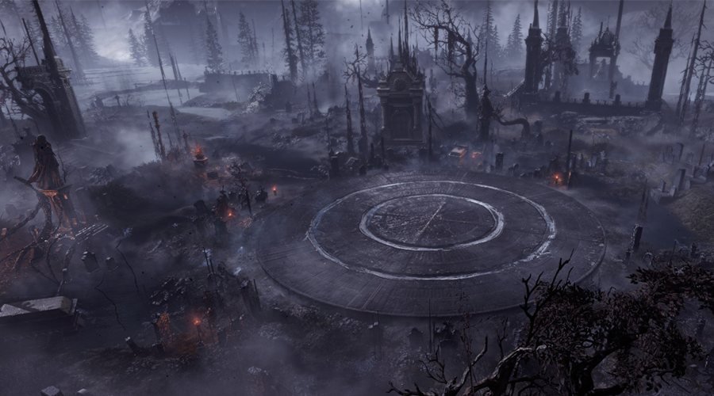
Sanctuary of Holy Rest — арена врат I
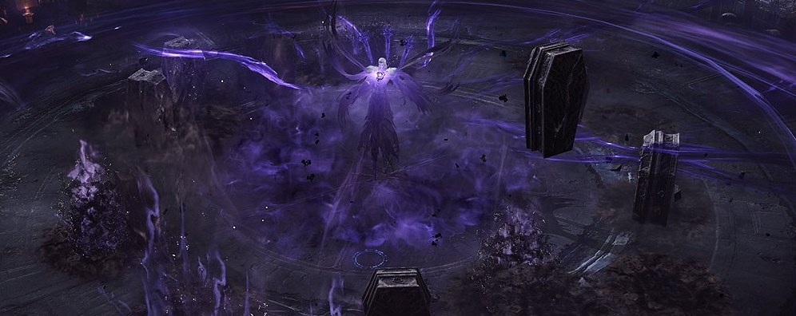
Гробы и Белгардин — кадр из патчноута
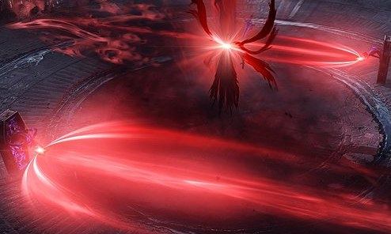
Красные лучи гробов
Все атаки
Врата II · Kragma's Field of Annihilation · энрейдж 13:00
Phetus an Kragma, the Forger of Death 죽음의 주조자, 페투스 안 크라그마
Обрывы по краям (падение = смерть), ритуалы фанатиков и счётчик захватов под HP. NM-миссия: ≤2 захватов на весь отряд.
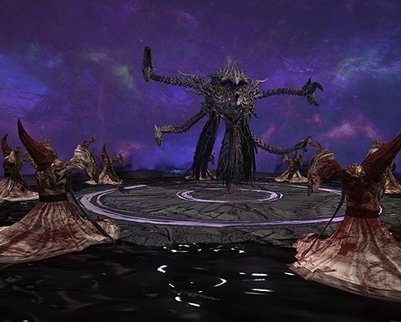
Phetus an Kragma на ритуальном круге
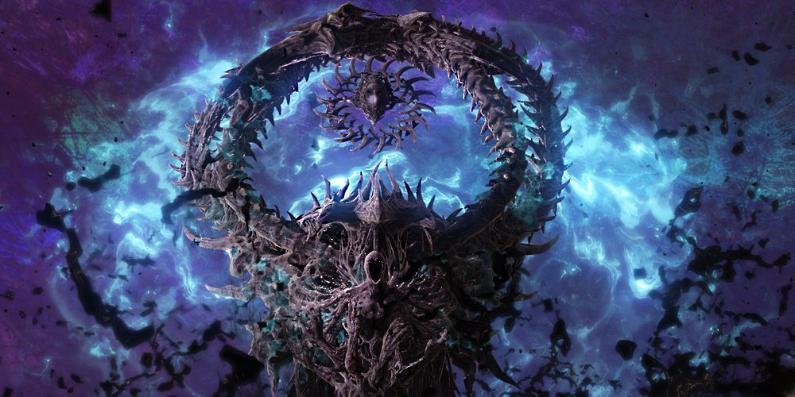
Chaktum — аватар маски (с 300)
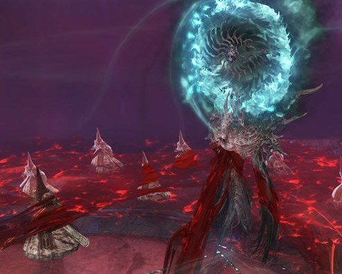
Chaktum над красным полем
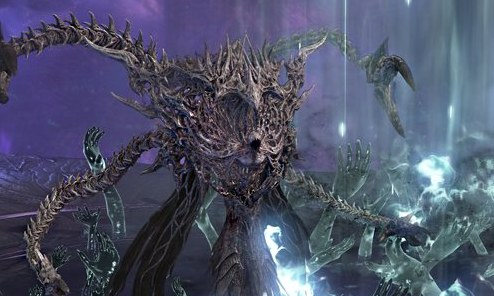
Щупальца Kragma
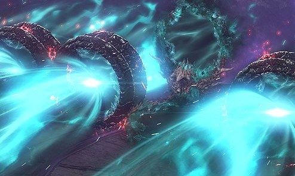
Сферы и удары
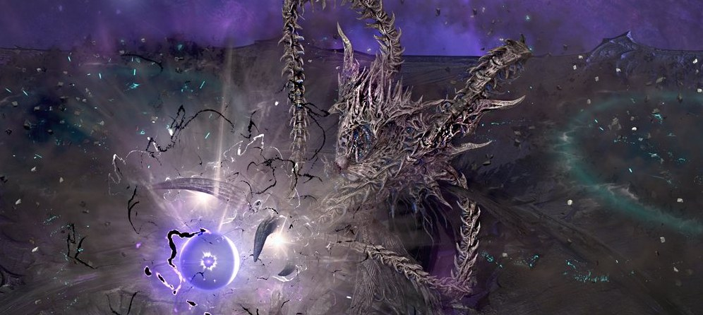
Сфера в руке Kragma
Атаки и захваты
Боевой предмет врат II
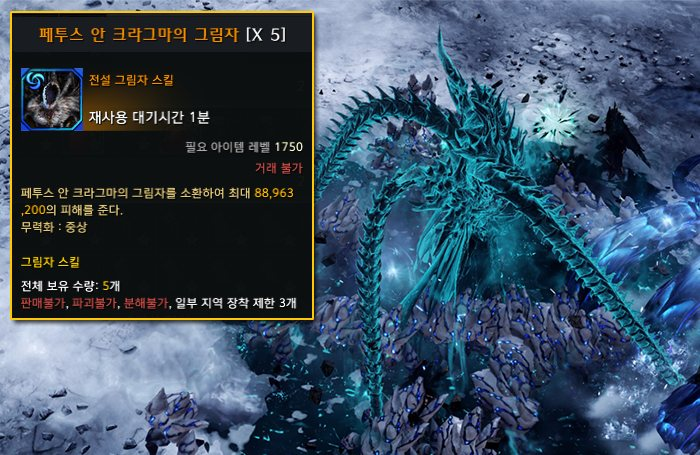
«Shadow of Phetus an Kragma» — особый предмет для механик врат II
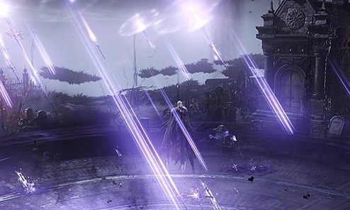
Кадр механик из патчноута
Цифры
Калькуляторы
Сложность — из переключателя в шапке. Доля ДД считается от 6 дамагеров: 16.6% — ровно «одна доля», 15% — уверенно, 20% — топ.
Доля урона и DPS
Готовность персонажа
Нужный DPS = HP врат II ÷ (13 мин × аптайм) ÷ 6 ДД. Для саппорта DPS не учитывается.
Темп боя
Прогноз линейный: Time Attack и ритуал 360 растягивают время сильнее, чем видно по первым минутам.
Добыча ·
Награды и Vambrace
Рейд делит лимит наград золотом и бесплатных «Ещё» с остальным эндгеймом. Попытка общая для всех сложностей — выход из рейда её сжигает.
H/NM: Relic-ядро 9% → 14%, Ancient 1% → 2%; 69 ядер подряд без Ancient — 70-е гарантированно Ancient.
Vambrace 완갑 — путь 1 → 25
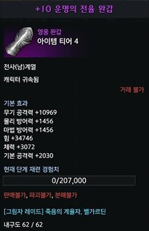
Получение
Эпический Vambrace — за первое прохождение врат II на любой сложности. Даёт статы, iLvl не меняет.
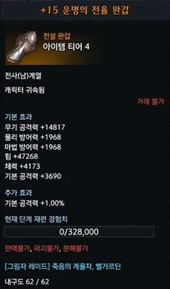
+10 · Legendary
Прорыв: 200 Specter's Shadow (N) или 100 Hand of Death (H/NM).
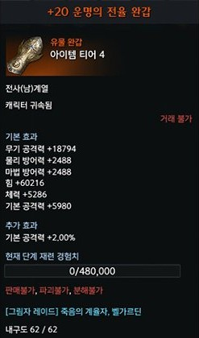
+15 · Relic
Прорыв: 240 Specter's Shadow или 120 Hand of Death.
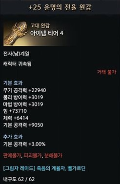
+20 · Ancient
Прорыв: 150 Hand of Death — только H и NM. Дальше до +25.
1 Hand of Death заменяет 2 Specter's Shadow на прорывах +10 и +15; если есть оба, сначала тратится Specter's Shadow. Обычная заточка: Silling, золото, Fate Fragment, Fate Destruction / Guardian Stone Crystal, Great Fate Leapstone, Superior Abidos Fusion Material.
Планер прорыва Vambrace
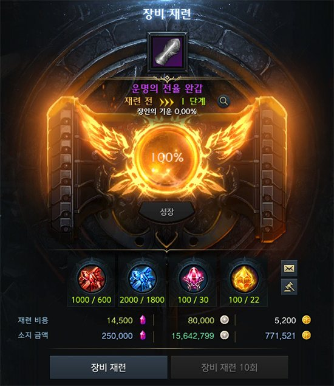
Окно заточки Vambrace
Belgardin Conquest 벨가르딘 정복전 · закончилось 16 сентября
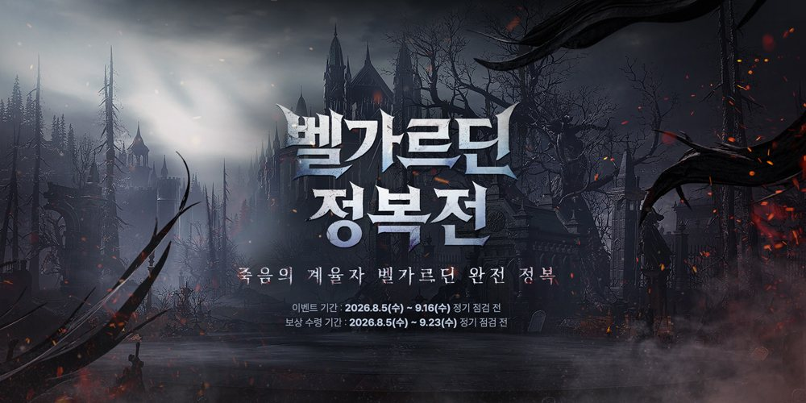
Баннер события
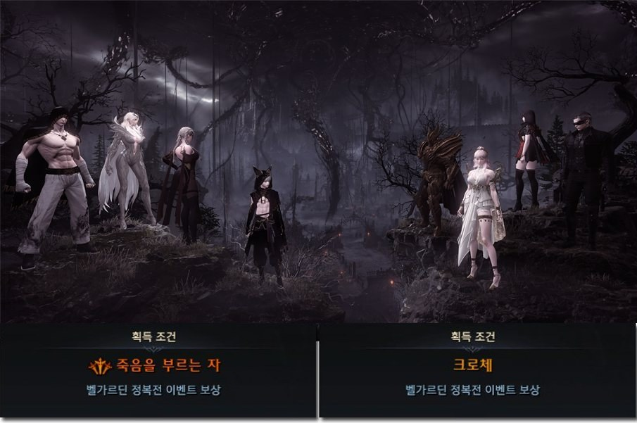
Титулы «Bringer of Death» (죽음을 부르는 자) и «Croce» (크로체)
Миссия
Условие
Clear Gate II
1 раз / всего 2 / всего 4 на сложности. Выше сложность засчитывает и ниже.
As Long As I Don't Die · I и II
Пройти врата без собственной смерти
Invincible Raid (N/H)
Весь рейд без перерыва и без смертей в отряде
No One Was Caught (NM)
Врата II: ≤2 захватов Kragma на весь отряд и никто не умер
Бонус
Ачивки «Head-On Collision», «You Shall Not Pass», «Not Enough Blood»
Титулы
5 из 6 NM-миссий → «Croce» + фон лаунжа; 6 из 6 → реликвийный «Bringer of Death»
«Мне неважно, сколько душ придётся собрать».Мотив Белгардина в двух словах — пересказ, не цитата из игры.
Belgardin Croce — святой из Sacrea. После гибели подруги детства Isabella ушёл в запретную некромантию и умер, так её и не вернув. Его тело стало оболочкой для одного из «существующих с начала времён» — но одержимость Белгардина поглотила сущность.
Во вторых вратах истинная форма — Phetus an Kragma — разрывает тело и переносит бой в Kragma's Field of Annihilation. После победы он всё же воскрешает Изабеллу и исчезает, почуяв в герое пламя бездны.
Откуда данные и картинки
Источники
Иконки предметов — с CDN игры и из базы Inven. Арты — из официального патчноута. Клипы атак — из гайдов Inven, клипы механик врат II — с Arca.live; всё пережато в MP4.